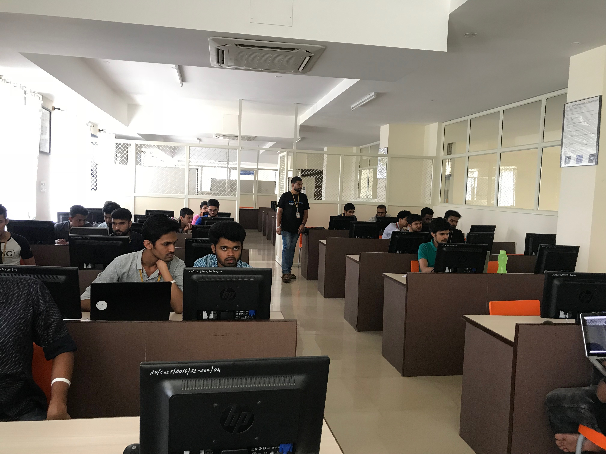

Saviskara is the prestigious event organised by the team of RACIT. Saviskara is organised on the 22nd and 23rd of the month april. There were many Events such as Technical, Recreational and cultural. This time there were Inter-college participants also.
Port the code event